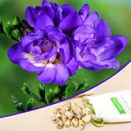

freesia

Freesia (Purple) - Bulbs (set of 5)
range: ₹ 240.
Product Details:
- Freesia is propagated by a bulb
- Best planting season of this bulb is in early in the spring
- Use the potting mix for bulb plantation as Garden soil + Compost + Perlite + Sand (2:2:1:1)Soil + Cocopeat + vermicompost (2:1:2)
Nema Yellow Freesia Flower Seed (100 per packet) (Bunch of 10)
range:₹ 354
Product Details:
- Seed Type: Flower
- Suitable For: Outdoor
- Organic Plant Seed
- Seed For: Yellow Freesia Flower
- Flowering Plant
- Quantity: 100 per packet
1 x Artificial Freesia Bouquet with 9 Fork Stems for Wedding Décor T4A4
range:₹ 999
Product Details:
Product Details:
- Type: Flower Variety: Freesia It is realistic and beautiful.
- Including 9 fork stems .
- Each fork including 6 flowers Perfect for wedding bouquet / posy.
- table arrangement or elegant home decoration